Twenty-Four Secrets in a Bottle, at La Provence

There is usually a line. Take that as the practical part of this entry and the rest as opinion: if you are going to La Provence in Vancouver, Washington, on a Saturday morning, go knowing you will stand a while under the red umbrellas with everyone else, reading the hours off the door and pretending not to look at what goes past on the trays. Half past nine on the first of August, low cloud, the whole patio full. Nobody seemed put out about it. That is its own kind of review.
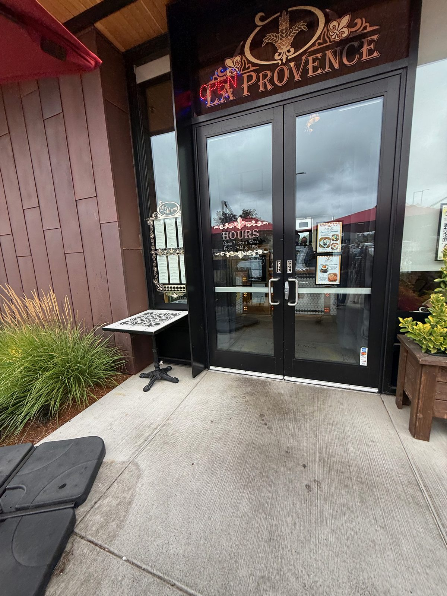
The building sits on SE Mill Plain, which regular readers will recognise as the same road as the Red Robin from the other night — one four-lane suburban artery, two entirely different arguments about what a meal is for. Where the Red Robin has a rotunda and a parking lot, La Provence has gold serif capitals a foot tall and a sheaf of wheat where the V ought to be, tied up in a fleur-de-lis. It is not subtle. It is not trying to be.
Three friends, thirty years ago
The story, as the company tells it, starts in 1996, when a small group of friends from France opened one bakery in Lake Oswego on the theory that you cannot import French atmosphere — you have to get up early and bake bread every morning until it turns up on its own. The names attached to that first bakery are Pascal, Didier and Alain. Thirty years on there are locations across the Portland metro, plus The Dalles, plus this one; the Vancouver room opened in 2020, which is to say it opened into the worst year in living memory for opening a room where people sit close together and linger. It has clearly survived that.
They also farm. A panel at the back of the menu describes a place in Canby, Oregon where they grow herbs and vegetables for the kitchens — the menu calls it a commitment to soil and ecosystem health and a resilient food system, which is the sort of sentence a marketing department writes, but there really is a farm and they really do grow on it. I am inclined to be generous about the prose when the noun behind it exists.
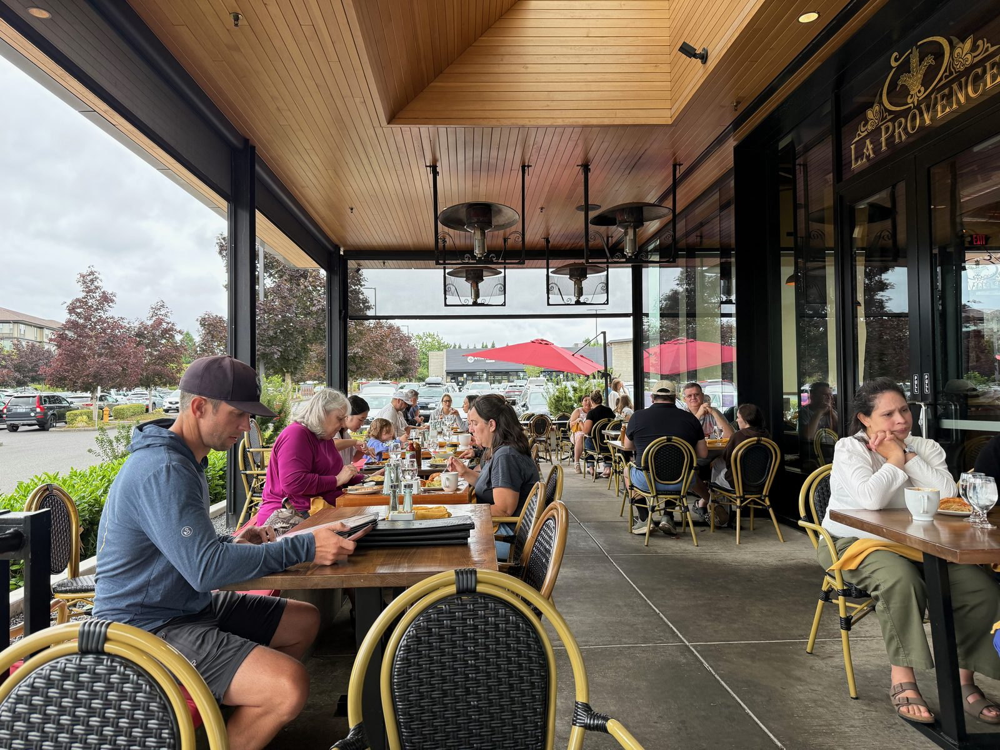
Two Benedicts, and the one I should have ordered
Here is the part I have to be honest about, because the point of keeping a notebook is that it records what happened rather than what would make a tidier entry.
La Provence runs two eggs Benedict. The house one — La Provence Benedict, $18.50 — is a grilled ham steak and two poached eggs stacked on a freshly toasted croissant and smothered in hollandaise. The other is the West Coast Salmon Benedict at $20.75, with dill hollandaise and avocado. I ordered the salmon.
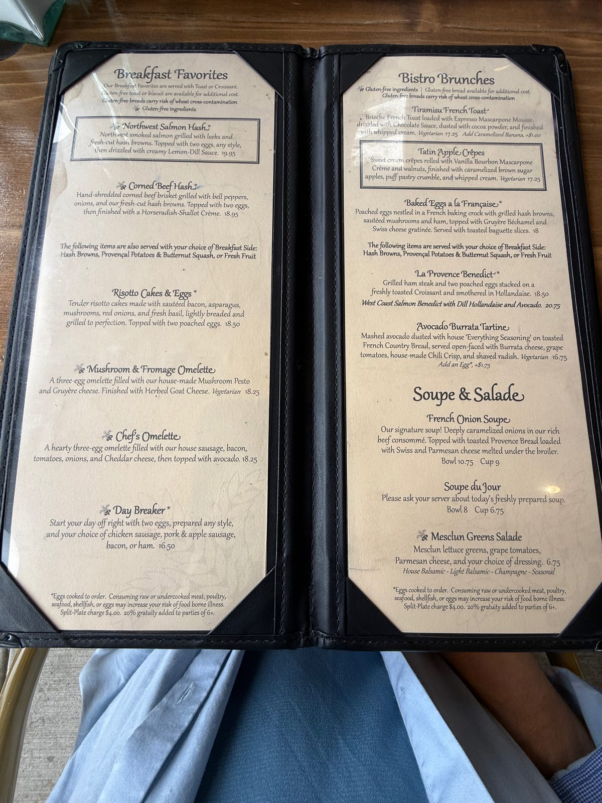
It was yummy. I want that on the record ahead of the qualification, because the qualification is not a complaint. It arrived properly hot, the croissant lid sitting on top like a hat, the hollandaise pale yellow and flecked green with dill, a dusting of paprika over the whole thing, and a heap of shredded hash browns alongside with genuinely browned crisp edges and a scatter of parsley. It is a good-looking plate. It photographs better than most things do.
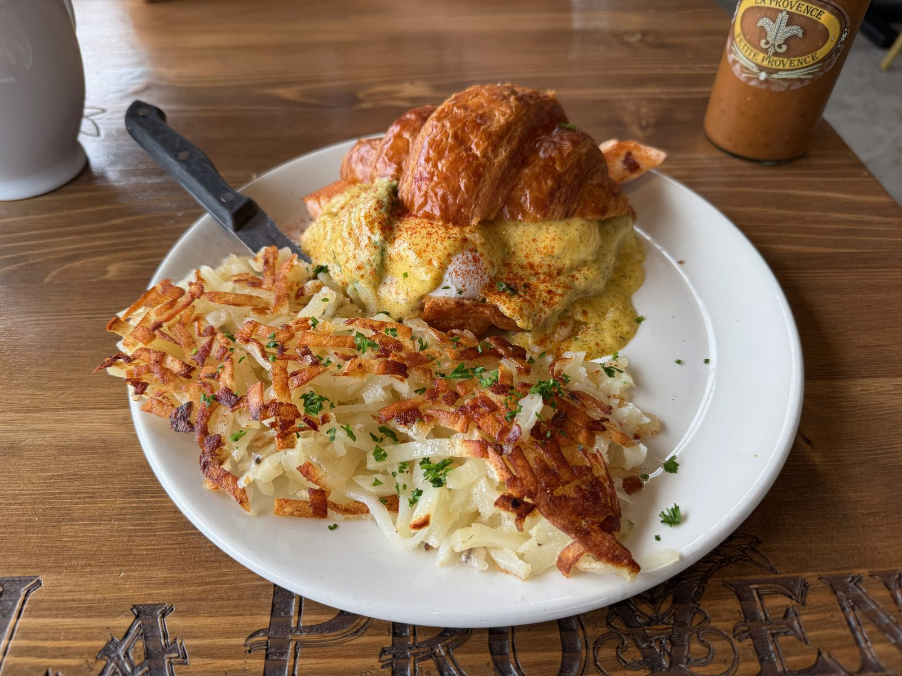
And yet. I have had their ham one, and their ham one is better. I spent a fair bit of this plate thinking about the other plate, which is the clearest verdict a person can give without saying anything unkind. My best guess as to why: the ham version is a collision — salt, fat, hot vinegary hollandaise, all of it landing on a sweet buttery croissant that is doing the job an English muffin does in the standard version, and doing it considerably better. Salmon and dill are a gentler pairing. They agree with each other. Nothing on the salmon plate is arguing, and I think this particular dish is better when something is arguing.
Order the ham one. Then order the salmon on the visit after, so you have your own opinion instead of mine.
The bottle
Now. The sauce.
It comes to the table in a glass bottle with a black lid and a small gold-and-yellow oval label — La Provence above, Petite Provence below, the wheat sheaf and fleur-de-lis between them. Inside it is thick and orange-red and visibly not smooth: flecks of pepper and seed suspended all the way down the glass. It is made in house. I am told it contains twenty-four ingredients and that they will not tell you what they are.
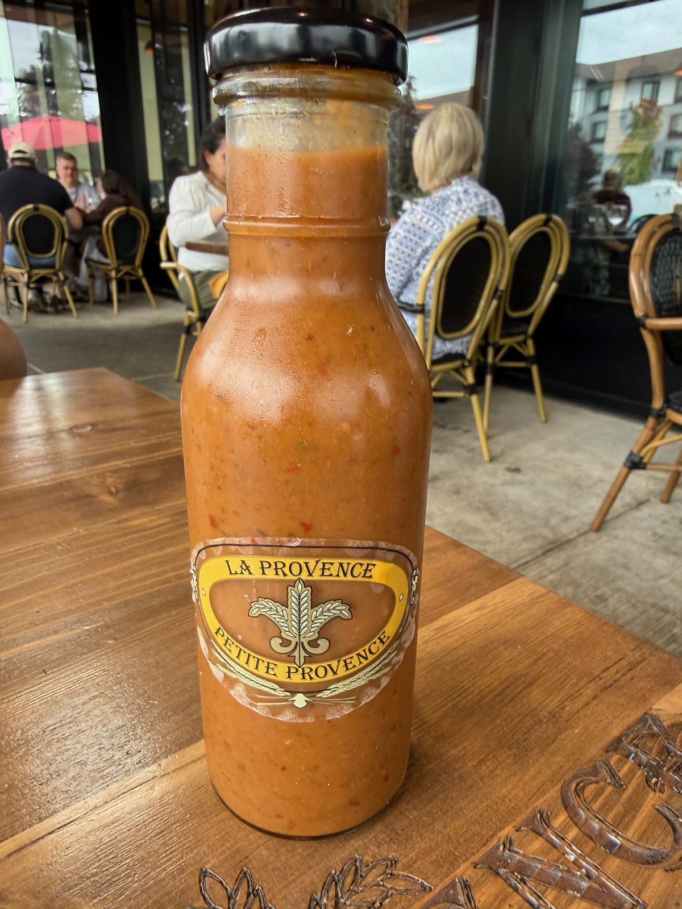
I put it on the hash browns. It is awesome — that is the word I used at the table and I am not going to improve on it here. It is the thing I would tell somebody about first if they asked about this meal, which is a slightly absurd outcome for a twenty-dollar Benedict, and I suspect the kitchen knows exactly what it is doing by setting a bottle of it on every table for free.
Twenty-four is a number chosen by someone who has counted. Nobody says twenty-four when they mean "a lot."
Whether it is properly a hot sauce or properly a ketchup I could not tell you, and I think the ambiguity is the point. It behaves like both. If they ever bottle it for the shelf I will be a customer.
The room, which is doing a lot of work
Inside is a proper high room — timber ceiling, black steel, a mezzanine with its own bistro tables looking down over the floor, a chandelier at one end and racks of croissants at the other. White subway tile everywhere, hooped in black, the way a Paris métro station would be if a métro station smelled like this.
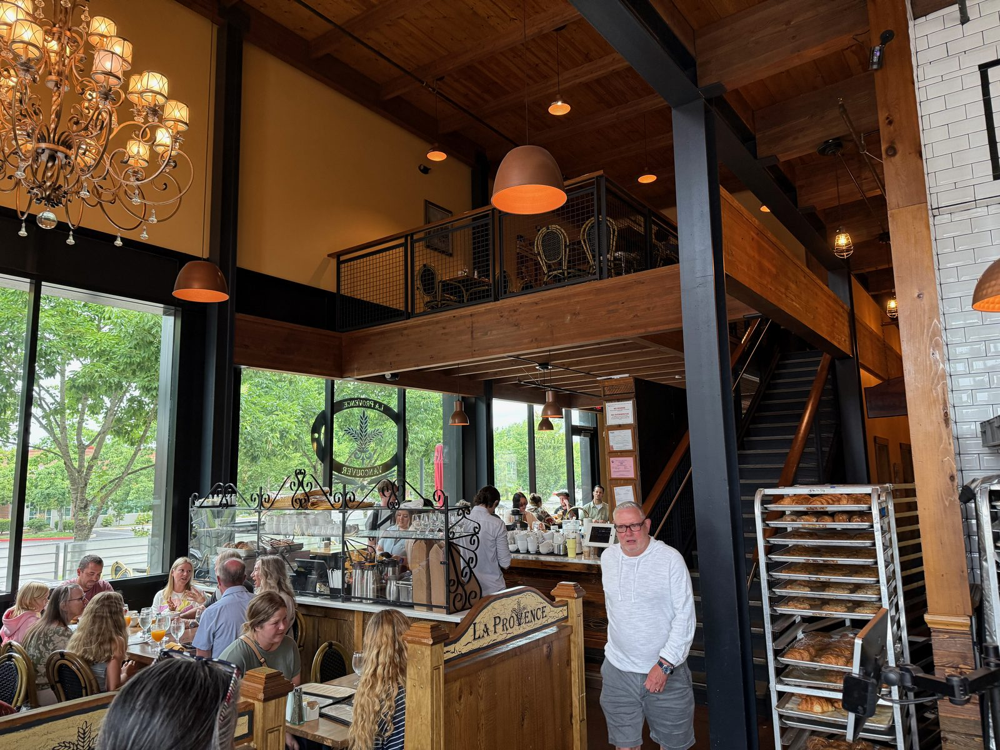
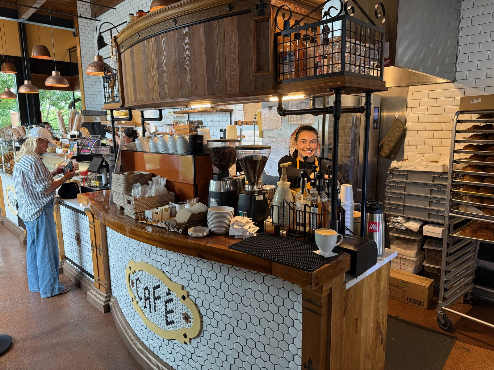
The signage is all like that — words set into the floor tile and the counter fronts rather than printed on anything. Bonjour at the register. Sucré along the pastry case. Small black chalkboards hang along the tile wall over the pass reading Petit Déjeuner, Bon Appétit, and — my favourite thing in the building — Pain Perdu, under which somebody has chalked the actual recipe in French: 25 cl of milk, 3 eggs, 75 g of sugar. It is a working recipe on a wall in Clark County, Washington. Nobody is going to read it. They wrote it out anyway.
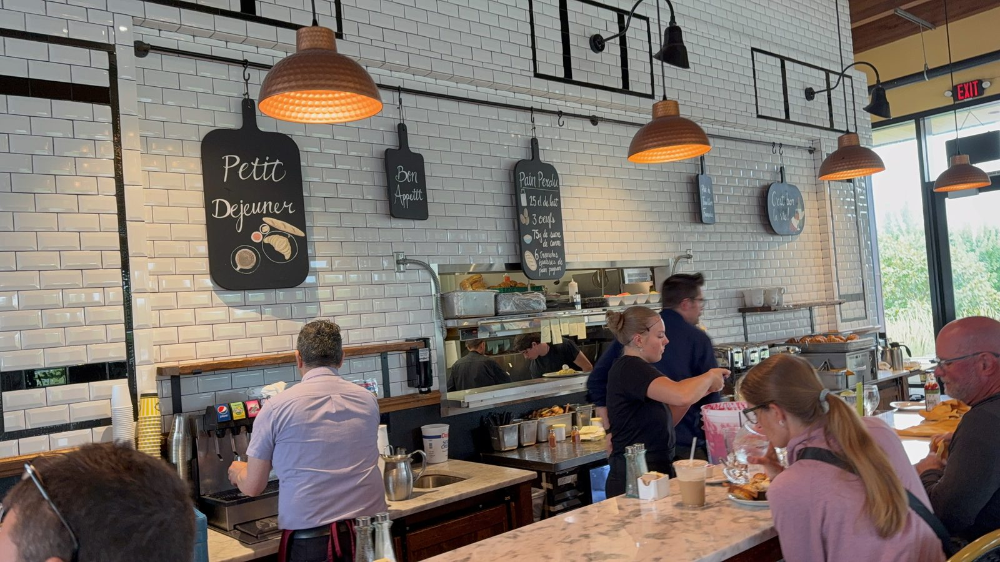
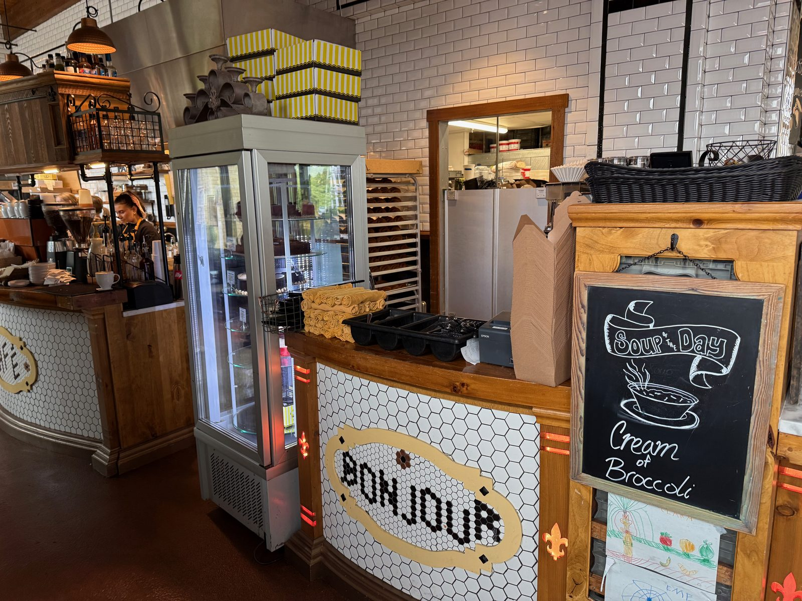
The case is a map of France
I spent longer at the pastry case than at the table, and I would defend that choice. Read along it and you are reading a fairly complete tour of French regional baking, priced in dollars, sitting in a strip on Mill Plain.
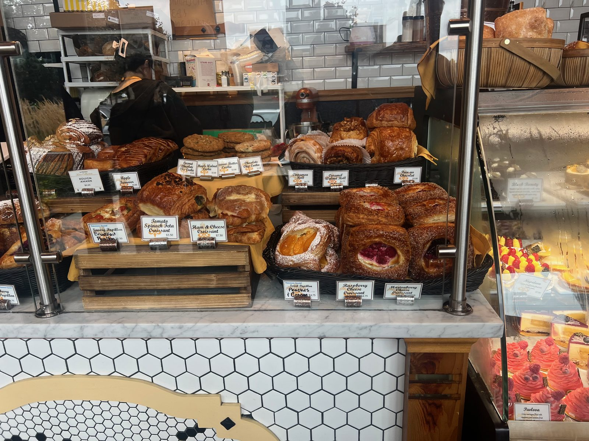
There is kouign-amann at $5.00 — Brittany, from the town of Douarnenez, invented around 1860 and named in Breton simply for cake and butter, because that is very nearly the entire ingredient list. The strict Douarnenez formula is forty per cent bread dough, thirty per cent butter, thirty per cent sugar, and the local pâtissiers formed an association in 1999 to stop anyone diluting it.
There are canelés at $3.75, or two in a box for $8.50, four for $17.00 — Bordeaux, out of the convents in the wine country, where winemakers used egg whites to clarify their wine and sent the spare yolks to the nuns. Dark caramelised shell, custard middle, rum and vanilla. In about 1985 some eighty-eight Bordeaux pâtissiers swore an oath over the recipe and dropped one of the ns from the spelling to mark it as theirs.
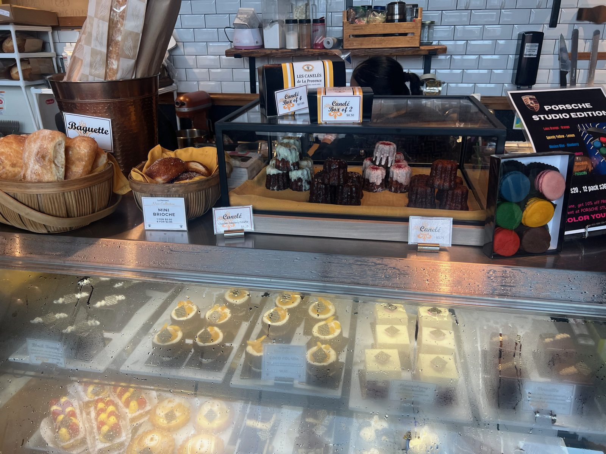
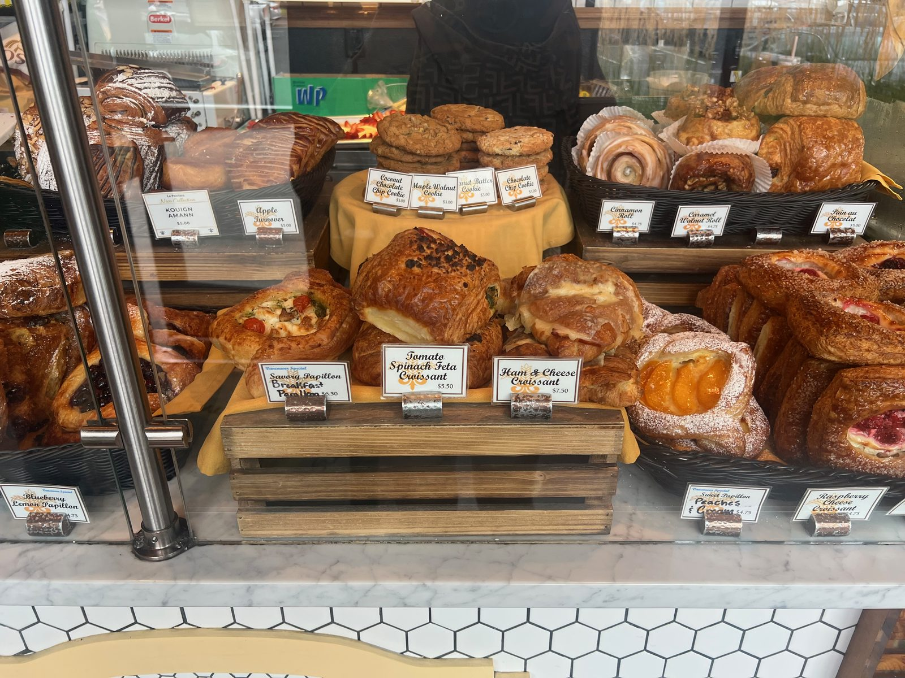
And then there is the papillon — the butterfly — which is their own shape: laminated dough opened out flat and loaded, sweet or savoury. The savoury breakfast one at $6.50 carries a little blue banner on its card reading Vancouver Special, which I found unreasonably charming. Someone at this location invented a pastry and the sign says so.
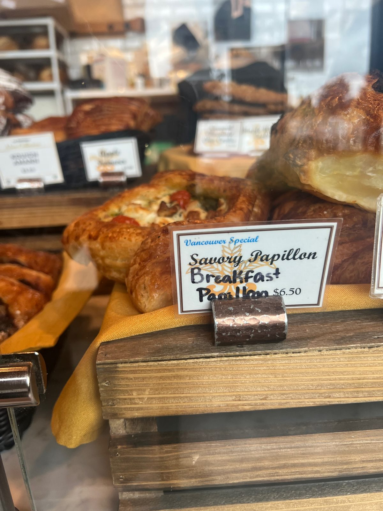
What I actually come here for
All of which is preamble to a much simpler fact. My favourite thing in this building costs a fraction of the Benedict and involves no technique at all beyond the croissant itself: a croissant with strawberry jam. That is the order. It is absolutely marvellous and I would put it up against anything else on the premises.
Worth saying that the croissant is load-bearing everywhere else on the menu too — it is what both Benedicts are built on, it is what the ham and cheese version is, it is half the case. A place that gets the croissant right has already won most of the arguments. Everything above is really a question of what they choose to put on top of it.
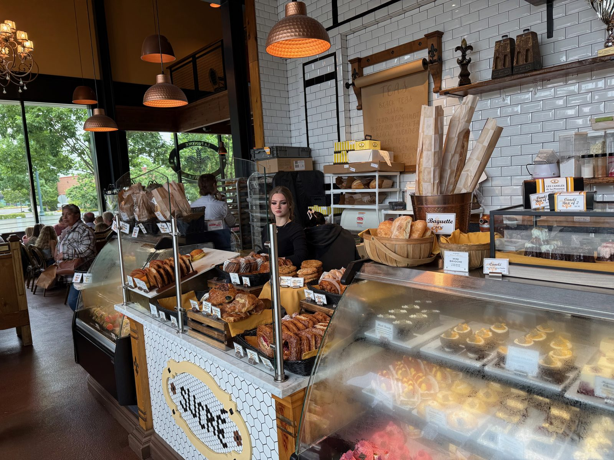
Notes from the rest of the menu
Things I did not order, recorded for next time. The Monte Cristo, $17.75 — turkey, ham, Swiss, cheddar, pineapple, tomato and mayonnaise on their own French country bread, dipped in egg batter and grilled — carries the best sentence printed anywhere on the menu: "No substitutions/changes, please. Cristo is cured for 24 hours to maintain its structure." A sandwich with a curing time and a structural argument. I will be having that.
Also: French onion soup at $10.75 the bowl, in beef consommé under toasted Provence bread with Swiss and parmesan run beneath the broiler. A mimosa flight of four and a bloody mary flight of four, both $22, for the table that has decided the day will not involve driving. And a Shirley Provence at $6 — orange juice, citrus soda, pomegranate float, cherry — filed under Zero-Proof Mocktails, which is a kindness at a brunch place.
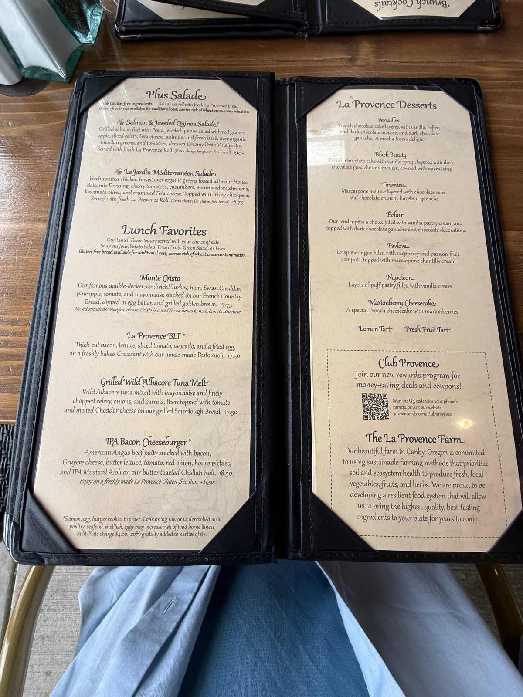
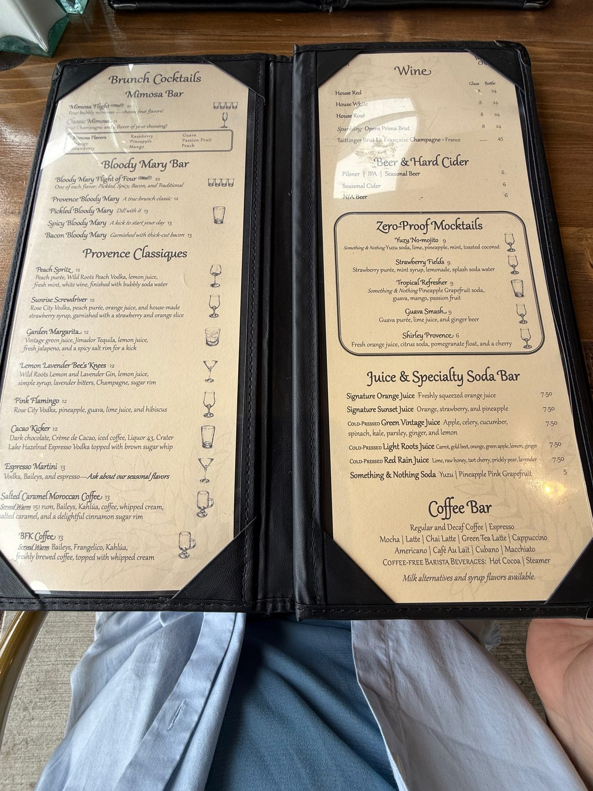
Is La Provence worth the wait?
Yes. The patio's covered and heated, so the wait is no hardship, and half the people in that line already know it. Go closer to seven if you actually want to beat it.
Practical
- La Provence Boulangerie & Patisserie, 17719 SE Mill Plain Blvd, Vancouver, WA 98683.
- Open seven days, 7am–4pm. No dinner.
- Expect a line on a weekend morning. The patio is covered and heated, so the line is no hardship.
- Benedicts $18.50 (ham) and $20.75 (salmon); pastries roughly $3 to $7.50.
- The house sauce is on the table and costs nothing. Use it.